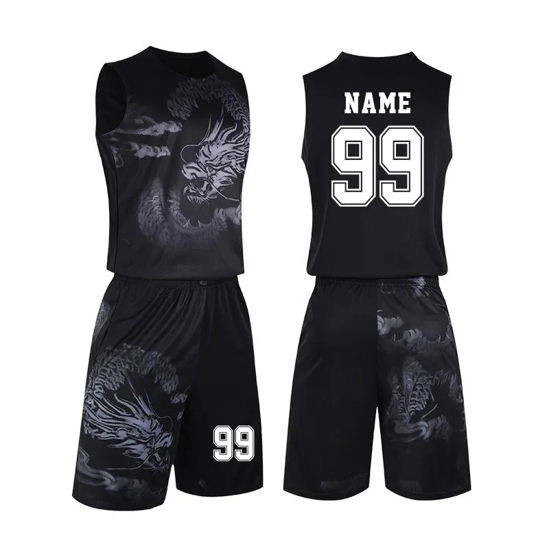

FIRE SWEAT

Bola de Basquete

Marca: Wilson Material: Borracha Cor: Marrom Esporte: Basquetebol Diâmetro do produto: 29,5 Polegadas Tamanho: Único R$ 170,00
Tênis de Basquete

Modelo: Tênis de basquete Fly Fashion Trend Gênero: Masculino Indicado para: Esportes, Basquete Altura do Cano: Cano Alto Elementos: Costura de couro Material de alta qualidade: PU ou Mesh Tamanhos: 37-38-39-40-42 R$ 350,00
Uniformede Basquete
Marca: SAFA SPORTS Número do Modelo: SS-TW-BU-A77-435 Nome do produto: Uniformes de basquete Cor: Aceita cor personalizada Logotipo: Logotipo personalizada Tamanho: P/M/G R$ 850,00
História do Basquete
O basquetebol foi criado pelo professor de Educação Física canadense James Naismith (1861-1940), em 1891. Sua invenção foi desenvolvida quando ele publicou as 13 regras para jogar basquetebol, em 1892. O esporte surgiu como uma alternativa ao inverno rigoroso da região, diferentemente dos outros praticados ao ar livre como o basebol e o futebol americano.
Kobe Bean - Jogador de Basquete
Kobe Bean Bryant foi um jogador profissional de basquetebol estadunidense. Jogou toda sua carreira como ala-armador no Los Angeles Lakers da National Basketball Association.
Endereço da loja google maps.